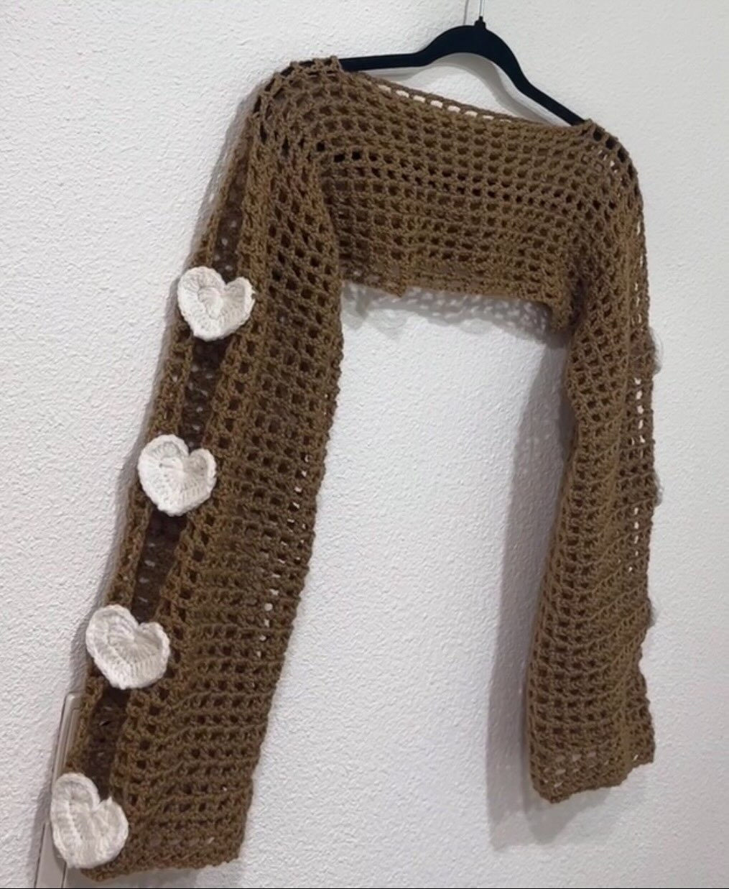
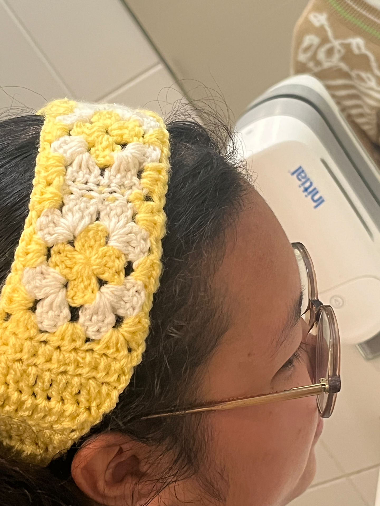

Passion & association
Le crochet &
Arts and Crafts
Le crochet, c'est ma méditation. Créer quelque chose de tangible point par point, c'est un équilibre parfait à la vie numérique. Je fais aussi partie de l'association Arts and Crafts d'Epitech Lyon, où on partage cette passion avec d'autres étudiants autour d'ateliers créatifs.

